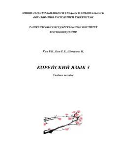

KTKoreys tilini o'rganish uchun mo'ljallangan uchinchi bosqich o'quv qo'llanmasi.
Ushbu o'quv qo'llanma koreys tilini o'rganayotgan o'zbek guruhlari uchun mo'ljallangan uchinchi kitobdir. Darslik 20 ta darsdan iborat bo'lib, grammatika, leksika, dialoglar va Koreya madaniyati haqidagi ma'lumotlarni o'z ichiga oladi.